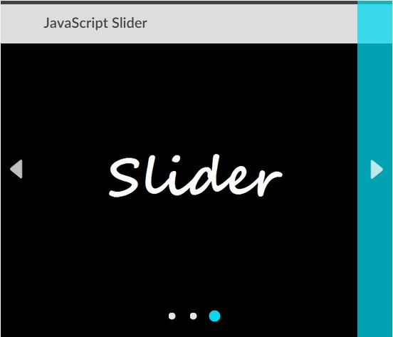

JavaScript Slider
Random images in slider to show image cycling and navigation elements in action
Introduction
There are many existing JavaScript image 'slider' platforms currently available on the internet; you can download and add them to your website with minimal tweaking and adjustments. One of these sliders is called "Slick"—I really enjoy using this slider because of its many options and great documentation. Even though these better sliders already existed, I wanted to try to build my own JavaScript slider from scratch.
SLIDER GOALS
- Familiarize myself with JavaScript constructor functions
- Be able to create an image slider at a specific point in the DOM
- Slider must have appropriate, working controls, and display image without distorting the dimenstions
- Slider must cycle through all available images, match website style, and be responsive
Approach
CONSTRUCTOR FUNCTION AND ELEMENT CREATION
I started learning enough about constructor functions to write a basic constructor that would be passed a string argument that corresponds to a "div" element's id attribute that was already (hardcoded) in the DOM.
The constructor function then searches the DOM for a div with an id that matches the argument it was passed, and creates and appends the structural and functional elements of the image slider to that div.
IMAGE AND DATA
I understand and have worked with JSON before, so I chose to handle the image and text data by linking out to a JavaScript file that held a JSON object. This JSON object ties the correct images and image titles to a constructed slider by looking for a property in the JSON object that matches the original constructor argument string.
If there is no property in the main JSON object to match the id value an error is thrown to the user. If the property does exist, the constructor moves on to fill its created elements with the images and text from the data file.
NAVIGATION ELEMENTS
Arrow "SVGs" and "navigation" div elements are created to allow the user to cycle through the available images in the slider. The "navigation" divs surround the visual svg arrows, to afford the user a larger area to click or touch when cycling the slider.
Static screenshot of the slider, showing image title (top), arrow with larger nav box (right), and position indicators (bottom).
D3 ELEMENTS AND EFFECTS
I included D3.js in this project to allow for aesthetically pleasing element sizing and positioning; I also wanted to use D3.js so I will be able to easily add transitions and effects to the image slider in the future (currently the images just switch to the next one immediately on slider cycle).
An animation of the 'dot' style that tracks and shows the slider's position
Final Thoughts
For an initial iteration of my own image slider, I think I ended up with a pretty good final project (considering that I had never written a constructor function before).
FUTURE IMPROVEMENTS
- Add optional parameters in the constructor to allow choice of transition style
- I kept having to pass a reference to the object currently being constructed to the functions within the constructor. Just using "this" wasn't working. Fix this issue.
- Slight arrow change to something more subtle (maybe...something like Flickr uses)
- Add area to include description in addition to title (and ad property in JSON file)